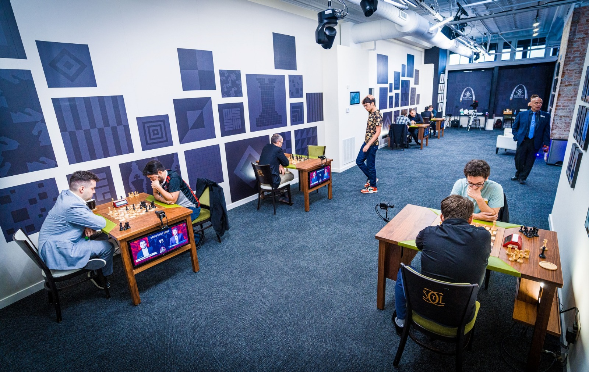
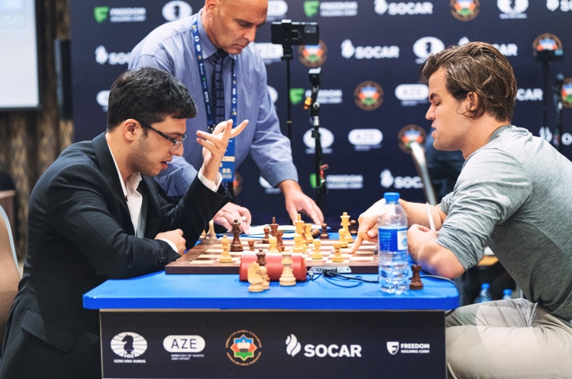
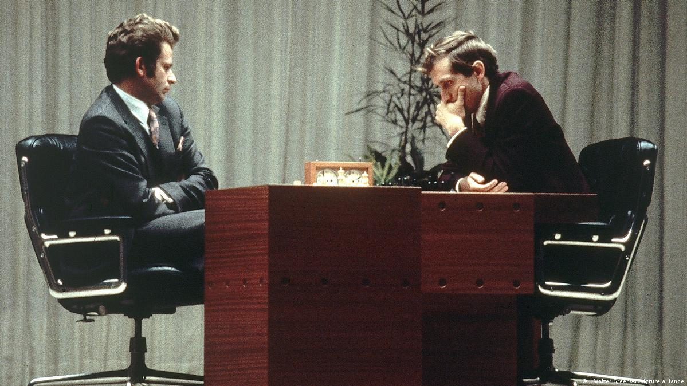

Tournaments
-
Grand Chess Tour
The Grand Chess Tour (GCT) is an international circuit for leading grandmasters. It began in 2015, inspired by Garry Kasparov. The tour includes classical, rapid, and blitz events. Tournaments have been held in cities such as Bucharest, Paris, Zagreb, Warsaw, and Saint Louis.
Players earn points at each event. In the 2025 season, the top four qualified for the tour finals, where the overall winner was decided. Past participants include Magnus Carlsen, Fabiano Caruana, Hikaru Nakamura, Wesley So, and Alireza Firouzja.
The circuit is known for its professional organisation, large prize funds, and role in promoting competitive chess.

A Grand Chess Tour event in Saint Louis, 2022 -
FIDE World Cup
The FIDE World Cup is held every two years and uses a knockout format. The 2025 edition brought together 206 players for a series of elimination matches.
Each match starts with two classical games. If the score is tied, faster tiebreak games decide who advances.
The top three finishers in 2025 qualified for the 2026 Candidates Tournament, whose winner earns the right to challenge the world champion.

Magnus Carlsen and Nijat Abasov at the 2023 FIDE World Cup -
World Chess Championship
The World Chess Championship is the game's most prestigious competition. The first official world championship match was played in 1886, when Wilhelm Steinitz defeated Johannes Zukertort.
The title match normally brings together the reigning champion and the winner of the Candidates Tournament. They play a series of classical games; if the match ends in a tie, faster games can decide the champion. The exact format and number of games may change between editions.

Boris Spassky and Bobby Fischer, 1972